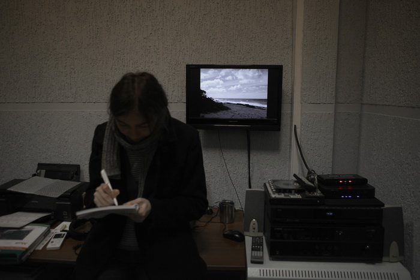
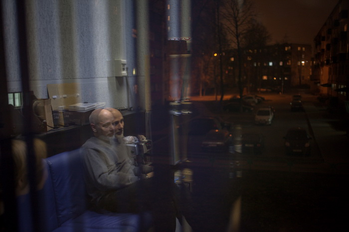
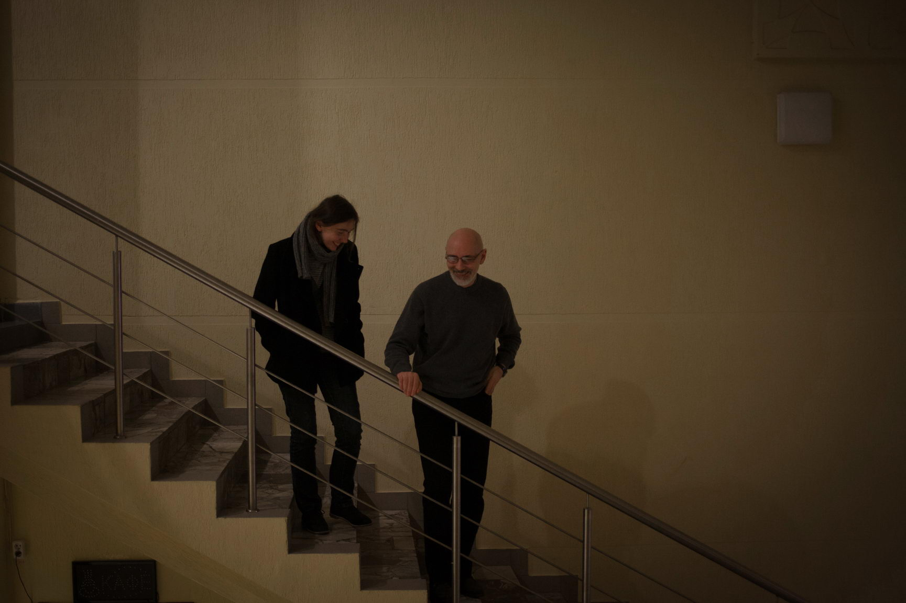
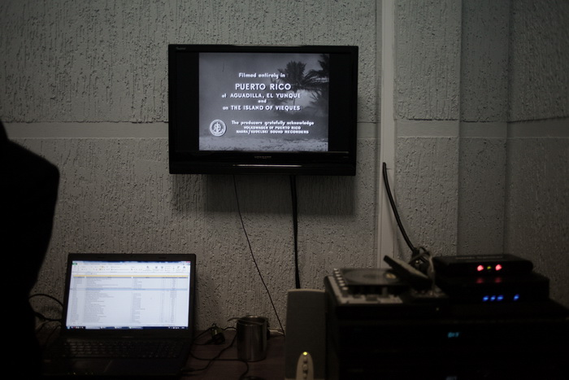

Уже несколько месяцев в минские кинотеатры привозят авторское кино. Обрадовавшись, мы встретились с создателями проекта "Cinemascope" Ольгой Надольской и Герой Гликом и узнали о механизме работы беларуского кинопроката, внутренней кухне "Cinemascope" и перспективах независимого кино в Беларуси.
"Cinemascope" возник в 2009 году?
О: Да, мы с ужасом обнаружили, что он существует уже 5 лет.
Он задумывался как некоммерческий проект или вы планировали выйти на самоокупаемость?
Г: Выйти на самоокупаемость: нам денег брать неоткуда. Мы вложили свои средства. История такая: раньше было модное увлечение киноклубами, как и сейчас есть. Все киноклубы некоммерческие и имеют недостаток: они пользуются пиратскими копиями.
О: Нет, ну это не недостаток. Это форма работы такая.
Г: Либо они существуют за счет того, что им кто-то предоставляет фильмы для некоммерческого показа: посольства, культурные центры и другие общественные организации. Но рано или поздно фонды исчерпывают себя. У меня периодически возникала мысль, что нужно закупать фильмы самим. Тогда появился проект "Cinemascope".
Администрация «Ракеты» была довольна, что кинотеатр наконец станет кинотеатром, а не центром досуга пенсионеров
Вы начали с показов классического кинематографа.
Г: Да, потому что эта ниша была свободна и одной из целей проекта была культурно-просветительская деятельность. У людей спрашиваешь: «Кто такой Антониони?» – «Не знаю». К тому же классика дешевле. Цена на фильмы пятидесятилетней давности вполне доступна для нас.
Почему вы перешли в «Ракету»?
Г: Сначала мы работали с «Победой», но там слишком большой зал для нашего репертуара. Мы покупаем фильм на 3-5 лет, показываем 2 раза, а потом он лежит и не окупается. Тогда мы нашли очень хороший вариант с «Центром-видео», где зрители длительное время могли смотреть фильмы из нашего каталога. И всё было хорошо, пока «Центр-видео» не закрыли. Мы пошли к генеральному директору УП «Киновидеопрокат» Василию Коктышу. Василий Петрович говорит: «Я могу вам выделить на выбор: «Комсомолец», «Дружба» и «Ракета». В центре не могу», – потому что дистрибьюторы коммерческого кино требуют центральные площадки на определенное количество сеансов. «Дружбу» мы даже не поехали смотреть, а «Комсомолец» не понравился месторасположением.
О: В «Ракете» мы сначала пришли смотреть большой зал, внизу. А там стояли такие из фанеры. Заяц. И гномик. И букеты, букеты. Типа похоронные. На сцене стояли. Ну и все эти обшарпанные стены, деревянные кресла. Мы очень расстроились.
Г: А потом у Оли возникла идея: «Вот если бы забрать верхний зал…» Там была танцплощадка для пенсионеров: прожекторы, стоптанный пол, диджейская стойка, убийственный запах пота.
Г: К нашему удивлению, «Киновидеопрокат» поддержал эту идею. Оставалось разработать проект, сделать ремонт и закупить оборудование. Илья Лубянов, наш инженер, – архитектор по специальности. Он сделал макет зала. Но этот проект оказался слишком радикальным для вышестоящих инстанций. Пришлось всё делать по законам и правилам. А это значит заказывать проект в проектном институте, проходить санэпидемстанцию, пожарников – и от нашего проекта не осталось ни-че-го. Изначально здесь должны были висеть большие квадраты-экраны...
О: Раздвижные стены оранжевого цвета... Когда начинали, мы не представляли, во что ввязываемся.
Нет проблем с руководством кинотеатра?
Г: Нет. Администрация «Ракеты» была очень довольна, что кинотеатр наконец станет кинотеатром, а не центром досуга пенсионеров.
"Cinemascope" собирается вступать в Международную конфедерацию артхаусных кинотеатров CICAE. Какие перспективы откроются?
О: Нас уже туда приняли. Они должны были рассмотреть нашу заявку в мае во время Каннского кинофестиваля, но недавно мы получили письмо, подтверждающее наше членство в этой организации. Перспектив никаких, кроме бирочки в углу. И так удобнее получать аккредитацию на фестивали.
Зачем вы ездите на кинофестивали? Завязываете контакты?
Г: Да. На фестивалях проще. К тому же на таких фестивалях, как Каннский, Берлинский и с недавних пор Венецианский, работают крупные кинорынки. Из конкурсной программы мы смотрим только отдельные интересные нам фильмы, а вот в параллельных программах, ретроспективах можно найти неформатное кино, которое потом нигде не всплывет. С ретроспективами легче, потому что крупные компании их не покупают, это коммерчески невыгодно. Им интересны новые фильмы, которые продают сразу в 300 копий. Показ фильма на 180 киноэкранах у крупных дистрибьюторов считается ограниченным. Это совсем другие масштабы, на которые мы не замахиваемся.
На каких условиях вы покупаете фильмы?
Г: Есть два варианта продаж. Первый вариант, по которому работает сейчас весь мир и беларуский «Киновидеопрокат» в 90 процентах случаев, такой: кинотеатры отдают правообладателю приблизительно половину выручки от проката фильма. Чем больше сеансов, тем выгоднее дистрибьютору. Если в зале сидят 10 человек, то он всё равно получает деньги. А кинотеатрам невыгодно, они бы лучше поставили другой фильм. Второй вариант: права на фильм продаются по фиксированной стоимости. По расчетам дистрибьютора фильм должен собрать, скажем, 100 млн долларов. Правообладатель расписывает эту сумму, исходя из количества экранов. Хотите – покупайте, не хотите – не покупайте. Мы работаем по последней схеме, потому что дистрибьюторы не заинтересованы продавать по процентной схеме на один зал одну копию фильма. Для них это копейки.

Ольга Надольская в аппаратной во время киносеанса. Фото: Максим Сарычев.
С какими дистрибьюторами вы работаете?
Г: В основном с европейскими. Как с довольно крупными “Hollywood Classics”, так и с микролейблами вроде “Re:Voir”, специализирующимися на киноавангарде. Среди российских партнёров – «Кино без границ», «Синема Престиж», «Парадиз», «Каравелла DDC». Практически все новые фильмы продаются одному российскому дистрибьютору сразу на всю территорию СНГ. Поэтому новые фильмы мы берем только у них.
У кого «Киновидеопрокат» покупает фильмы?
Г: В основном в Москве у разных компаний.
О: Но только в России.
Г: Потому что у нас некому делать дубляж: это дорого и невыгодно.

Кинотеатр «Ракета». Фото: Максим Сарычев.
Вам кто-нибудь помогает в проекте?
Г: Помогают инженер Илья Лубянов и Татьяна Курачинская, которая занимается рекламой и продвижением проекта в социальных сетях. Вот и всё.
Мы пытались работать со СМИ. На наши пресс-показы приходил, ну, хорошо, если один человек
Для чего не хватает людей?
Г: Для переводов. Практически все фильмы, даже классические, мы переводим заново. Хороших переводчиков мало. Как объяснить человеку, что так не говорят: «Коза заржала нечеловеческим голосом»? Помните этот фильм, да? Басилашвили в «Осеннем марафоне». Ну правда такие переводы приходят.
У вас нет массированной рекламы. Вы хотите привлекать больше людей, давать рекламу в СМИ?
Г: Да, мы крутим сейчас трейлеры в большом зале. Раньше это технически не получалось. Большинства фильмов, которые мы рекламируем, нет на DCP (цифровой формат – Прим. ред.). Их нужно переводить в специальный кодированный формат. Илья освоил эту технику несколько месяцев назад.
О: И со СМИ мы пытались работать. На наши пресс-показы приходил, ну, хорошо, если один человек. Например, на «Пьету» Ким Ки Дука.
Г: «Пьета» – это наш самый большой пролет. Финансовый.
О: Мы не хотели показывать Ким Ки Дука, потому что со времен «Киноформата 4х4» у него ничего не изменилось. Но все спрашивали: «Когда же будет Ким Ки Дук?» И мы его купили.
Г: После «Пьеты» мы долго не решались ничего покупать, потому что стремно было.
Сейчас вы начали постоянно показывать новое фестивальное кино: «Нимфоманку», «Жизнь Адель», «Внутри Льюина Дэвиса», «Выживут только любовники». Это тенденция?
О: Скорее совпадение.
Г: Так получилось, что они все вышли в одно время. Только «Нимфоманка» – это проект «Киновидеопроката».
О: Но можно сказать, что мы давно шли к этому. Первый проект, с которым мы вышли на большой экран, – «Любовь живет три года» Фредерика Бегбедера в «Победе». Это был успешный проект.
Г: Раньше была проблема с копиями и площадкой. Теперь есть такая площадка: кинотеатр «Победа». Здесь проходит «Лістапад». И Игорь Сукманов (директор программы игрового кино кинофестиваля «Лiстапад» – Прим.ред.) занимается некоммерческим прокатом. В прошлом году была программа японского кино, в феврале он купил «Романтическую коллекцию» у «Русского репортажа» и «Кино без границ». В этом же пакете был «Конгресс»: анимация с игровым кино вперемежку.

Гера Глик в аппаратной. Фото: Максим Сарычев.
На «Жизнь Адель» купил права Игорь Сукманов?
Г: Мы. Сукманов показал фильм на «Лістападзе» 2 раза. В это же время мы говорили с «Киновидеопрокатом» и решили показать «Жизнь Адель». Мы связались с «Кино без границ» (мы с ними давно сотрудничаем, многие фильмы у них покупали), и они по вполне сходной цене уступили нам фильм.
Какие еще проблемы, кроме финансовых, существуют с кинопоказами?
О: Бюрократическая волокита. На каждый фильм необходимо оформлять прокатное удостоверение, в котором указаны правообладатель, кто представляет фильм на территории РБ, в какие сроки он будет здесь показываться, для какой возрастной аудитории. Прокатное удостоверение выдает государственный регистр кино- и видеофильмов при Министерстве культуры. Кроме того, существует Общественный совет по нравственности, который занимается рассмотрением отдельных спорных случаев.
Кто работает в этих организациях?
О: Я недавно читала очень интересное интервью с председателями Общественного совета Николаем Чергинцом и Ниной Фрольцовой. Оказывается, это общественная инициатива. Они за это не получают денег, просто очень заботятся о нашей нравственности.
С какими фильмами у вас были проблемы?
Г: С фильмами Дерека Джармена, когда мы показывали в «Победе» его ретроспективу. Нам разрешили только один фестивальный показ всей программы.

Гера Глик и Ольга Надольская в фойе кинотеатра «Ракета». Фото: Максим Сарычев.
А можно увильнуть от цензуры?
Г: По закону – нет.
Насколько выгодно показывать фестивальное кино? Это окупаемо?
Г: «Киновидеопрокату» безубыточно, он отдает около 50 процентов выручки дистрибьюторам. Главное, чтобы на фильм шли люди. А нам сложнее, потому что мы покупаем фильмы по фиксированной цене и половину выручки отдаем «Киновидеопрокату». Единственный вариант, который мы для себя нашли, – ждать 2-3 месяца после мировой премьеры, когда цены падают, и пытаться купить фильм для малого зала. Он нас и спасает. Потому что большой зал – это одна-две недели проката. А в малом зале только наш репертуар, и мы можем крутить фильмы долго. Мы стараемся покупать права на максимально длинный срок. Цена не очень отличается.
"Cinemascope" сейчас прибылен?
Г: Скажем так, мы пока не убыточны благодаря тому, что не платим за аренду кинотеатра. Наш инженер является работником «Киновидеопроката», мы не платим ему зарплату.
Работать с однокопийными фильмами финансово удобно. Прекрасный пример – фильм Алексея Германа «Трудно быть богом» в «Доме кино». «Киновидеопрокат» опасался, что люди не придут, но все-таки купил. И сработало: в первые дни был полный зал. На другой однокопийный фильм в «Беларуси» «Далласский клуб покупателей» билеты раскупали за несколько дней до показа.
Если ты дистрибьютор и у тебя есть коллекция фильмов – в каком зале их показывать?
Многие фильмы из российского проката не покупают для Беларуси. У людей они на слуху, потому что они читают российские сайты, например. Если публика хочет, чтобы фильм привезли, есть ли способы повлиять на «Киновидеопрокат»?
Г: Можно писать на «Кинопарке». «Киновидеопрокат» не против проводить более разнообразную репертуарную политику, но есть куча условий. Некоторые дистрибьюторы просто не хотят продавать фильм ограниченным количеством копий. Говорят: «У вас 18 кинотеатров? Значит, ставьте по два сеанса в день в каждом». К примеру, у «Голодных игр» доходило до 55 сеансов в день. А так как в Минске мало многозальных кинотеатров, то получается, что не хватает экранов, чтобы вечером в одном кинотеатре показывать несколько фильмов от разных дистрибьюторов.
О: Или есть какие-то неприемлемые условия. Такая история была с фильмом «Отель "Гранд Будапешт"» Уэса Андерсона. Мы настаивали, чтобы была хотя бы одна копия субтитрированная. Но компания, которая является правообладателем этого фильма в России, потребовала 3 сеанса в день.
Г: А такое количество сеансов фильм с субтитрами не выдержит. У нас не столько любителей кино, чтобы, предположим, на 21 сеанс в неделю собрать зал. Приходится отказываться. Но в нашем прокате давно зреет мысль, что должны быть фильмы с субтитрами.
А «Киновидеопрокат» может договориться напрямую?
О: Российские дистрибьюторы покупают права на нашу территорию часто еще на стадии производства фильмов. Можно обратиться к продюсерам, западным правообладателям, но они всё равно отправят вас к представительству, которое владеет правами в СНГ. С такой ситуацией сталкивался и кинофестиваль «Лістапад». Так было с «Жизнью Адель».
Вы думали о том, чтобы работать в регионах?
Г: Думали. Но у нас не хватает рук. Нужен человек, который будет курировать область или хотя бы туда ездить периодически. Но тут надо учитывать, что областные кинопрокаты находятся в ещё более зависимом положении от крупных дистрибьюторов. Они сами покупают все права, но работать с областями Москва не очень хочет из-за низкой прибыли.
Почему нет независимых проектов? У нас нет дистрибьюторов?
Г: Дистрибьюторов у нас нет, потому что нет частных кинотеатров. Если ты дистрибьютор и у тебя есть коллекция фильмов – в каком зале их показывать?
Допустим, построить частный кинотеатр.
О: Была попытка у «Арткинотеатра». Они позиционировали себя как «арт», а потом начали крутить коммерческое кино, которое брали у того же «Киновидеопроката». Российские дистрибьюторы отказались с ними работать, потому что у них было только 2 зала.

Аппаратная малого зала кинотеатра «Ракета». Фото: Максим Сарычев.
Получается, барьер входа на рынок очень высокий и частным инвесторам не пробиться?
Г: Нет смысла пробиваться. Во-первых, нет экранов. Во-вторых, покупать фильмы и делать дубляж на русский язык дорого. Единственная пустая ниша – это малые залы с DCP-оборудованием. Но только если появятся DCP-проекторы для малых залов по доступной цене. Потому что оборудованный кинотеатр даже за 50 тысяч долларов не сделаешь.
Мы хотим показать радикальный киноавангард, но боимся, что не соберем зрителей
Как выживают артхаусные кинотеатры в Европе?
Г: В Европе артхаус плохо окупается. Но там совсем другой принцип проката. Кинотеатры объединяются и демонстрируют фильм на нескольких экранах. Или же в мультиплексе параллельно с блокбастерами идут артхаусные фильмы. Есть и другие варианты: у нашего знакомого в Голландии кинотеатр окупается за счет бара.
О: В европейских кинотеатрах существует миллион механизмов поддержки: выделение денег из министерств культуры, международные организации типа «Европа Синема». У «Европа Синема» сейчас очень большая программа по переводу всех кинотеатров на «цифру». Но они теперь не работают с Беларусью. Раньше «Победа» была в «Европа Синема».
Почему больше не работают?
Г: Изменился список стран-участниц, и теперь Беларусь в него не входит.
Какие у вас планы?
Г: Мы поменяли формат в этом году: раньше новые фильмы показывали с перерывами, а сейчас понедельно. Нам показалось, что так лучше. Кто не попал на фильм – придет завтра, а не будет через 3 недели искать его в репертуаре.
О: В этом году во второй раз будет фестиваль немого кино «Кинемо» в музее Азгура. Надеемся сделать показы и в регионах. Мы уже ведём переговоры с Брестом, Могилевом и Гродно. Если получится сделать это хотя бы в одном городе, кроме Минска, – уже будет прогресс.
Г: Мы хотели показывать радикальный киноавангард, но пока... ничего не сделали, хотя фильмы уже закуплены. Боимся, что не соберём зрителей. Наши зрители не любят такое смотреть. Они смотрят то, что знают: Вуди Аллен, Полански, Хичкок… Но я думаю, что мы всё-таки запустим эту программу в мае. В новом сезоне попытаемся проводить что-то вроде кинолектория по истории кино. Скажем, 100 этапных фильмов. Но как его организовать? Если каждый раз будут приходить новые люди, они будут «не в теме». Меня это больше всего смущает. И наши ежемесячные обсуждения по вторникам еще не оформились. Каждый раз получается новый формат. В первый раз обсуждали документальный фильм «Левиафан», во второй раз был Андрей Кудиненко, третий провели ребята из «Летучего университета». Если приживется, то, может быть, и продолжим.